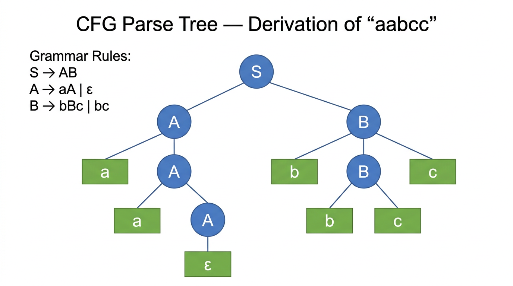

Context-Free Grammars — COMP0003 Automata¶
Lecture-style notes. A context-free grammar (CFG) is a set of recursive rewriting rules that generates strings from a start variable. CFGs are the generative counterpart to PDAs: both define exactly the context-free languages. The two-way conversion — CFG to PDA and PDA to CFG — is the central equivalence result, and the DFA-to-CFG conversion shows that every regular language is also context-free.
1. COMPLETE TOPIC SUMMARIES¶
Context-free grammar — definition¶

{kind=link}
A context-free grammar is a 4-tuple \(G = (V, \Sigma, R, S)\) where:
| Component | Meaning |
|---|---|
| \(V\) | Finite set of variables (also called nonterminals) |
| \(\Sigma\) | Finite set of terminals (the alphabet; \(V \cap \Sigma = \emptyset\)) |
| \(R\) | Finite set of rules (or productions), each of the form \(A \to w\) where \(A \in V\) and \(w \in (V \cup \Sigma)^*\) |
| \(S \in V\) | Start variable (by convention, the left-hand side of the first rule) |
Convenience notation: Multiple rules with the same left-hand variable can be merged with \(\mid\):
Derivations¶
A grammar derives a string by repeatedly replacing variables with the right-hand side of a rule.
Notation:
- \(uAv \Rightarrow uwv\) if \(A \to w\) is a rule in \(R\) (one-step derivation).
- \(u \Rightarrow^* v\) means \(u\) derives \(v\) in zero or more steps.
- A grammar derives \(w \in \Sigma^*\) if \(S \Rightarrow^* w\).
Formal definition of a derivation: A sequence of intermediate strings \(s_0, s_1, \ldots, s_m\) where:
- \(s_0 = S\) (start with the start variable).
- For each \(i\): \(s_{i-1} = xA_i y\) and \(s_i = xu_i y\) where \(A_i \to u_i \in R\) (replace one variable using a rule).
- \(s_m = w\) (final string contains only terminals).
Context-free languages¶
The language generated by a CFG \(G\) is:
A language is context-free if it is generated by some CFG. The class of all context-free languages is denoted CFL.
Example 1 — 0^n 1^n (n ≥ 0)¶
Grammar:
Derivation of \(0011\):
Each application of \(S \to 0S1\) wraps the current string with a \(0\)-\(1\) pair. Applying \(S \to \varepsilon\) terminates the derivation.
Example 2 — equal number of 0s and 1s¶
Grammar:
Why this works: The rule \(S0S1S\) generates a \(0\) before a \(1\) with arbitrary balanced strings in between; \(S1S0S\) does the reverse. The rule \(SS\) allows concatenation of balanced strings. Every string with equal \(0\)s and \(1\)s can be decomposed this way.
DFA to CFG conversion¶
Every regular language is context-free. The conversion procedure from a DFA \(M = (Q, \Sigma, \delta, q_0, F)\) to a CFG \(G = (V, \Sigma, R, S)\) is:
| CFG component | Constructed from DFA |
|---|---|
| Variables \(V\) | One variable \(Q_i\) for each state \(q_i \in Q\) |
| Terminals \(\Sigma\) | Same as DFA input alphabet |
| Start variable \(S\) | \(Q_0\) (variable for the start state \(q_0\)) |
| Rules \(R\) | (1) For each transition \(\delta(q_i, a) = q_j\), add \(Q_i \to aQ_j\). (2) For each accept state \(q_i \in F\), add \(Q_i \to \varepsilon\). |
Example — DFA for "even number of 1s" (states \(q_\text{even}\), \(q_\text{odd}\); start = \(q_\text{even}\); accept = \(\{q_\text{even}\}\)):
Equivalence proof — DFA and constructed CFG¶
Direction 1: \(w \in L(M) \Rightarrow w \in L(G)\).
If \(w = w_1 \cdots w_n\) is accepted by the DFA, there exist states \(r_0, r_1, \ldots, r_n\) with \(r_0 = q_0\), \(\delta(r_i, w_{i+1}) = r_{i+1}\), and \(r_n \in F\). Build the derivation:
Each step uses the transition rule \(Q_i \to w_{i+1} Q_{i+1}\); the final step uses \(Q_n \to \varepsilon\) (since \(r_n \in F\)).
Direction 2: \(w \in L(G) \Rightarrow w \in L(M)\).
Any derivation in \(G\) consists of transition rules \(Q_i \to aQ_j\) followed by a final \(Q_k \to \varepsilon\). Simulating in the DFA: each \(Q_i \to aQ_j\) corresponds to \(\delta(q_i, a) = q_j\), and the final \(Q_k \to \varepsilon\) means \(q_k \in F\). So the DFA accepts \(w\).
CFG to PDA conversion¶
Theorem: For every CFG \(G\), there exists a PDA \(M\) such that \(L(M) = L(G)\).
Construction: Build a 3-state PDA (\(q_\text{start}\), \(q_\text{loop}\), \(q_\text{accept}\)):
| Transition | From | To | Label | Purpose |
|---|---|---|---|---|
| Initialise | \(q_\text{start}\) | \(q_\text{loop}\) | \(\varepsilon,\; \varepsilon \to S\$\) | Push start variable and bottom marker |
| Rule application | \(q_\text{loop}\) | \(q_\text{loop}\) | \(\varepsilon,\; A \to w\) | If top is variable \(A\), replace with RHS \(w\) |
| Terminal match | \(q_\text{loop}\) | \(q_\text{loop}\) | \(a,\; a \to \varepsilon\) | If top is terminal \(a\) matching input, pop it |
| Accept | \(q_\text{loop}\) | \(q_\text{accept}\) | \(\varepsilon,\; \$ \to \varepsilon\) | Pop bottom marker, accept |
Pushing multi-character strings: When a rule's RHS \(w\) has multiple symbols, they are pushed via intermediate states in reverse order so the leftmost symbol ends up on top.
For example, the rule \(S \to 0A1\) means pushing \(1\), then \(A\), then \(0\) (three intermediate push transitions).
Key insight: The PDA nondeterministically "guesses" which grammar rule to apply. If there exists a derivation in the grammar, some branch of the PDA will find it. The PDA simulates a leftmost derivation on the stack.
PDA to CFG conversion¶
Theorem: For every PDA \(M\), there exists a CFG \(G\) such that \(L(G) = L(M)\).
This is the harder direction. The construction requires first converting the PDA into special form.
Step 1 — Convert to special-form PDA (three modifications, all without loss of generality):
- Single accept state: Reroute all accept states to a single fresh accept state \(q_f\) via \(\varepsilon, \varepsilon \to \varepsilon\) transitions.
- Empty stack before accepting: Add states that pop all remaining stack symbols before reaching \(q_f\); only accept via \(\varepsilon, \$ \to \varepsilon\).
- Each transition is strictly a push or a pop: Split replacement transitions (\(a, X \to Y\)) into pop-then-push through an intermediate state. Convert no-ops (\(\varepsilon, \varepsilon \to \varepsilon\)) into push-then-pop of a dummy symbol.
Step 2 — Construct the CFG:
Given the special-form PDA with states \(Q\):
- Variables: \(A_{q_i q_j}\) for every pair of states \((q_i, q_j) \in Q \times Q\).
- Start variable: \(S = A_{q_0 q_f}\).
- Rules (three types):
| Type | Rule | Meaning |
|---|---|---|
| Base case | \(A_{q_i q_i} \to \varepsilon\) for every \(q_i\) | Staying in a state with empty stack consumes nothing |
| Stack empties mid-path | \(A_{q_i q_j} \to A_{q_i q_k} \; A_{q_k q_j}\) for any \(i, j, k\) | If stack empties at intermediate state \(q_k\), split into two sub-paths |
| Matched push/pop | \(A_{q_p q_t} \to a \; A_{q_r q_s} \; b\) | If \(q_p \xrightarrow{a,\; \varepsilon \to \alpha} q_r\) (push \(\alpha\)) and \(q_s \xrightarrow{b,\; \alpha \to \varepsilon} q_t\) (pop \(\alpha\)), the push and pop "wrap around" whatever happens between \(q_r\) and \(q_s\) |
Intuition for \(A_{q_i q_j}\): The variable generates exactly the set of strings that the PDA can consume when going from state \(q_i\) to state \(q_j\) with the stack empty at both endpoints.
Equivalence proof sketch (CFG ↔ PDA)¶
The full equivalence \(\text{CFL} = \text{NPDA languages}\) follows from the two directions above. The proof of correctness for each direction uses induction on derivation length:
CFG → PDA direction: If the grammar derives \(w\) in \(n\) steps, the PDA accepts \(w\).
- Base (\(n = 1\)): \(S \to w\) where \(w \in \Sigma^*\); the PDA pushes \(w\), then matches it against input.
- Inductive step: The first rule applied determines the stack configuration; by the inductive hypothesis, each sub-derivation is correctly simulated.
PDA → CFG direction (stronger claim): If \(A_{q_i q_j}\) generates \(w\), then the PDA can go from \(q_i\) to \(q_j\) reading \(w\) with empty stack at both endpoints.
- Base (\(n = 1\)): Only \(A_{q_i q_i} \to \varepsilon\) applies; reading nothing from \(q_i\) to \(q_i\) with empty stack is trivially valid.
- Inductive step (\(n = k + 1\)): Two cases based on which rule type was applied first:
- Type 2 (\(A_{q_i q_j} \to A_{q_i q_k} A_{q_k q_j}\)): By IH, first part takes PDA from \(q_i\) to \(q_k\), second from \(q_k\) to \(q_j\), both with empty stack at endpoints. Chain them.
- Type 3 (\(A_{q_p q_t} \to a \; A_{q_r q_s} \; b\)): The push of \(\alpha\) at \(q_p\) and pop of \(\alpha\) at \(q_s\) wrap around the sub-path \(q_r \to q_s\) (handled by IH). Stack ends empty.
2. EXAM-STYLE QUESTIONS (WITH MODEL ANSWERS)¶
Q1 — CFG formal definition¶
Question. Define a context-free grammar formally. What is the language of a CFG?
Model answer. A CFG is a 4-tuple \(G = (V, \Sigma, R, S)\) where \(V\) is a finite set of variables, \(\Sigma\) is a finite set of terminals (with \(V \cap \Sigma = \emptyset\)), \(R\) is a finite set of rules of the form \(A \to w\) (\(A \in V\), \(w \in (V \cup \Sigma)^*\)), and \(S \in V\) is the start variable. The language of \(G\) is \(L(G) = \{w \in \Sigma^* \mid S \Rightarrow^* w\}\), the set of all terminal strings derivable from \(S\).
Q2 — Write a CFG for 0^n 1^n¶
Question. Write a CFG that generates \(\{0^n 1^n \mid n \geq 0\}\). Show the derivation of \(000111\).
Model answer. Grammar: \(S \to 0S1 \mid \varepsilon\). Derivation: \(S \Rightarrow 0S1 \Rightarrow 00S11 \Rightarrow 000S111 \Rightarrow 000\varepsilon111 = 000111\).
Q3 — DFA to CFG conversion¶
Question. Describe the procedure for converting a DFA into an equivalent CFG. Apply it to a DFA over \(\{a, b\}\) with two states \(q_0, q_1\), start state \(q_0\), accept state \(\{q_1\}\), and transitions \(\delta(q_0, a) = q_0\), \(\delta(q_0, b) = q_1\), \(\delta(q_1, a) = q_1\), \(\delta(q_1, b) = q_0\).
Model answer. Create variable \(Q_i\) for each state \(q_i\). For each transition \(\delta(q_i, c) = q_j\), add rule \(Q_i \to cQ_j\). For each accept state \(q_i\), add \(Q_i \to \varepsilon\). Start variable is \(Q_0\). Applied:
This generates exactly the strings accepted by the DFA (those ending in state \(q_1\), i.e. strings with an odd number of \(b\)s).
Q4 — CFG to PDA construction¶
Question. Explain how to convert a CFG into a PDA. How many states does the PDA need? Why is nondeterminism essential?
Model answer. The PDA has 3 states: \(q_\text{start}\), \(q_\text{loop}\), \(q_\text{accept}\). From \(q_\text{start}\), push the start variable \(S\) and a bottom marker \(\$\), then move to \(q_\text{loop}\). In \(q_\text{loop}\): if the top of the stack is a variable \(A\), nondeterministically choose a rule \(A \to w\) and replace \(A\) with \(w\) (pushing in reverse order via intermediate states); if the top is a terminal matching the next input character, pop it. When \(\$\) is on top and input is exhausted, move to \(q_\text{accept}\). Nondeterminism is essential because at each step the PDA must "guess" which grammar rule to apply — the correct rule depends on the full structure of the input, which is not yet known.
Q5 — PDA to CFG variables¶
Question. In the PDA-to-CFG conversion, what does a variable \(A_{q_i q_j}\) represent? What are the three types of rules, and what is the intuition behind the matched push/pop rule?
Model answer. \(A_{q_i q_j}\) generates exactly the set of input strings that the (special-form) PDA can consume when transitioning from \(q_i\) to \(q_j\) with the stack empty at both endpoints. The three rule types are: (1) Base: \(A_{q_i q_i} \to \varepsilon\) — staying in a state with no stack change. (2) Split: \(A_{q_i q_j} \to A_{q_i q_k} A_{q_k q_j}\) — the stack empties at some intermediate \(q_k\), splitting the path. (3) Matched push/pop: \(A_{q_p q_t} \to a \; A_{q_r q_s} \; b\) — a push of \(\alpha\) on reading \(a\) at \(q_p \to q_r\) is matched by a pop of \(\alpha\) on reading \(b\) at \(q_s \to q_t\). The pushed symbol \(\alpha\) stays on the stack throughout the sub-path \(q_r \to q_s\), and everything generated by \(A_{q_r q_s}\) is "wrapped" between the input characters \(a\) and \(b\).
3. MUST-KNOW KEY POINTS¶
- CFG: 4-tuple \((V, \Sigma, R, S)\) — variables, terminals, rules (\(A \to w\)), start variable.
- Derivation: \(S \Rightarrow^* w\) via repeated rule applications; \(L(G) = \{w \in \Sigma^* \mid S \Rightarrow^* w\}\).
- Example: \(S \to 0S1 \mid \varepsilon\) generates \(\{0^n 1^n\}\).
- DFA → CFG: states become variables; \(\delta(q_i, a) = q_j\) becomes \(Q_i \to aQ_j\); accept states get \(Q_i \to \varepsilon\); start variable = \(Q_0\).
- Every regular language is context-free (direct corollary of DFA → CFG conversion).
- CFG → PDA: 3-state PDA; push start variable, nondeterministically apply rules on stack, match terminals with input, accept on empty stack (\(\$\)).
- PDA → CFG: Convert PDA to special form (single accept, empty stack, push-or-pop only); variables \(A_{q_i q_j}\); three rule types (base, split, matched push/pop).
- CFG \(\equiv\) PDA: Both define exactly the class of context-free languages. Proof by induction on derivation length in both directions.
4. HIGH-PRIORITY TOPICS¶
🔴 Must Know¶
- CFG formal definition: 4-tuple, what each component means, rule format \(A \to w\).
- Derivation notation: \(\Rightarrow\) (one step), \(\Rightarrow^*\) (zero or more steps), \(L(G)\).
- Canonical example: \(S \to 0S1 \mid \varepsilon\) for \(\{0^n 1^n\}\), including a traced derivation.
- DFA → CFG procedure: states → variables, transitions → rules, accept states → \(\varepsilon\)-rules.
- CFG → PDA construction: 3-state design, role of nondeterminism, pushing RHS in reverse order via intermediate states.
- The equivalence result: CFGs and PDAs define the same class (context-free languages).
🟡 Important¶
- Equal 0s and 1s grammar: \(S \to S0S1S \mid S1S0S \mid SS \mid \varepsilon\).
- PDA → CFG construction: special-form PDA requirements (single accept, empty stack, push-or-pop only); variables \(A_{q_i q_j}\); three rule types.
- Equivalence proof idea: induction on derivation length; the stronger claim about \(A_{q_i q_j}\) generating strings that take PDA from \(q_i\) to \(q_j\) with empty stack.
- DFA ↔ CFG equivalence proof (both directions): DFA transitions map to derivation steps and vice versa.
🟢 Useful but Lower Priority¶
- Full worked example of PDA → CFG conversion (e.g. equal 0s and 1s PDA to grammar rules).
- Parse trees and ambiguity in CFGs (related but typically a separate topic).
- Chomsky normal form and its role in the CFL pumping lemma proof.
5. TOPIC INTERCONNECTIONS & BIGGER PICTURE¶
- Regular languages \(\subset\) CFLs: The DFA → CFG conversion proves strict containment (and \(\{0^n 1^n\}\) witnesses strictness — it is context-free but not regular by the pumping lemma).
- PDA ↔ CFG equivalence mirrors the DFA ↔ NFA ↔ regex equivalence for regular languages: multiple formalisms, one language class.
- Compiler front-ends: Context-free grammars define the syntax of programming languages. Parsers (LL, LR) are essentially algorithms for testing membership in a CFL, using stack-based techniques directly related to the CFG → PDA construction.
- Pumping lemma for CFLs (later lectures) uses properties of parse trees (not DFA states) to show languages like \(\{a^n b^n c^n\}\) are not context-free — extending the regular pumping lemma to the next level of the hierarchy.
- Chomsky hierarchy: the CFG/PDA level is Type 2. Regular languages (Type 3) sit below; context-sensitive (Type 1) and recursively enumerable (Type 0, Turing machines) sit above. Each level corresponds to a more powerful automaton and grammar formalism.
- Stack discipline: the PDA's LIFO stack naturally handles nested and recursive structure (parentheses, function calls, XML tags) — this is why context-free grammars are the right tool for syntax.
6. EXAM STRATEGY TIPS¶
- CFG design: start simple — \(S \to 0S1 \mid \varepsilon\) is enough for \(\{0^n 1^n\}\). Don't over-complicate with unnecessary variables.
- Show derivations explicitly: write out every \(\Rightarrow\) step. Examiners want to see each rule applied, not just the final string.
- DFA → CFG: this is a mechanical procedure — practise it until it's automatic. One rule per transition, one \(\varepsilon\)-rule per accept state, start variable = start state variable.
- CFG → PDA: remember the 3-state template. The most common mistake is forgetting to push the RHS in reverse order or omitting intermediate states for multi-symbol pushes.
- PDA → CFG: know the three modifications for special form (single accept, empty stack, push-or-pop). For the rules, remember the three types: base (\(A_{q_i q_i} \to \varepsilon\)), split (\(A_{q_i q_j} \to A_{q_i q_k} A_{q_k q_j}\)), matched push/pop (\(A_{q_p q_t} \to a A_{q_r q_s} b\)).
- Proof questions: state the induction parameter explicitly ("by induction on the number of derivation steps \(n\)"), handle the base case, state the inductive hypothesis, and show the inductive step with clear case analysis.
- When asked "are CFGs and PDAs equivalent?" — answer yes, they define exactly the context-free languages, and briefly sketch both conversion directions.
These notes cover Automata Lectures 8–9 material on context-free grammars and their equivalence with pushdown automata. The DFA → CFG conversion shows regular languages are a subset of CFLs; the CFG ↔ PDA equivalence establishes the full characterisation of context-free languages.